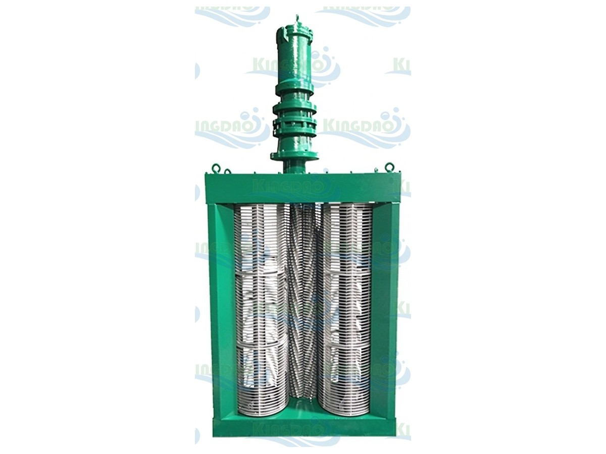

In short: Open-channel maceration in two frame sizes: PZG1 single drum from 250 to 1,700 m3/h in 16 models at 3-4 kW, and PZG2 double drum from 1,050 to 6,400 m3/h in 23 models at 4-7.5 kW. The model code states drum count and effective blade height.
The drum sits across the channel and the flow passes through it. Where the screenings load is ordinary, one motor drives the drum. Where the station cannot afford a stop, each drum gets its own motor.
250 to 1,700 m³/h. The normal-duty choice.
1,050 to 6,400 m³/h. Wider channel, one drive.
900 to 6,900 m³/h. Each drum independent, so a jam on one drum does not stop the station.
What none of them need: no screenings conveyor, no bin, no manual raking — the cut material travels with the flow.
Looking for the in-pipe version? The PG tubular crushing grille mounts in the pipeline instead, 40 to 800 m³/h. See PG Tubular Grille
Same order as the tables above — the physical unit behind each specification.

The economic option. One motor drives the cutter shaft and the drum through a gear train. Fewer components, lower capital cost, simpler maintenance — the right choice for most municipal and industrial channels.
| PZG1 single drum | Capacity m³/h | A mm | H mm | B mm | D mm | Motor kW |
|---|---|---|---|---|---|---|
| PZG1-4X4 | 250 | 400 | 1500 | 400 | 400 | 3 |
| PZG1-4X5 | 300 | 400 | 1500 | 500 | 450 | 3 |
| PZG1-5X5 | 450 | 500 | 1600 | 500 | 450 | 3 |
| PZG1-6X5 | 540 | 600 | 1700 | 500 | 450 | 4 |
| PZG1-7X5 | 630 | 700 | 1800 | 500 | 450 | 4 |
| PZG1-8X5 | 720 | 800 | 1900 | 500 | 450 | 4 |
| PZG1-4X6 | 430 | 400 | 1500 | 600 | 450 | 4 |
| PZG1-5X6 | 550 | 500 | 1600 | 600 | 450 | 4 |
| PZG1-6X6 | 650 | 600 | 1700 | 600 | 450 | 4 |
| PZG1-7X6 | 760 | 700 | 1800 | 600 | 450 | 4 |
| PZG1-8X6 | 860 | 800 | 1900 | 600 | 450 | 4 |
| PZG1-9X6 | 970 | 900 | 2000 | 600 | 450 | 4 |
| PZG1-10X6 | 1080 | 1000 | 2100 | 600 | 450 | 4 |
| PZG1-8X8 | 1150 | 800 | 1900 | 800 | 600 | 4 |
| PZG1-10X8 | 1440 | 1000 | 2100 | 800 | 600 | 4 |
| PZG1-12X8 | 1700 | 1200 | 2300 | 800 | 600 | 4 |
| PZG2 double drum | Capacity m³/h | A mm | H mm | B mm | D mm | Motor kW |
|---|---|---|---|---|---|---|
| PZG2-6X7 | 1050 | 600 | 1700 | 700 | 500 | 4 |
| PZG2-6X8 | 1200 | 600 | 1700 | 800 | 500 | 4 |
| PZG2-7X8 | 1400 | 700 | 1800 | 800 | 500 | 4 |
| PZG2-8X8 | 1600 | 800 | 1900 | 800 | 500 | 4 |
| PZG2-9X8 | 1800 | 900 | 2000 | 800 | 500 | 4 |
| PZG2-10X8 | 2000 | 1000 | 2100 | 800 | 500 | 4 |
| PZG2-12X8 | 2400 | 1200 | 2300 | 800 | 500 | 5.5 |
| PZG2-6X10 | 1500 | 600 | 1700 | 1000 | 580 | 4 |
| PZG2-7X10 | 1750 | 700 | 1800 | 1000 | 580 | 4 |
| PZG2-8X10 | 2000 | 800 | 1900 | 1000 | 580 | 4 |
| PZG2-9X10 | 2250 | 900 | 2000 | 1000 | 580 | 4 |
| PZG2-10X10 | 2500 | 1000 | 2100 | 1000 | 580 | 5.5 |
| PZG2-12X10 | 3000 | 1200 | 2300 | 1000 | 580 | 5.5 |
| PZG2-14X10 | 3500 | 1400 | 2500 | 1000 | 580 | 5.5 |
| PZG2-10X12 | 3500 | 1000 | 2100 | 1200 | 580 | 5.5 |
| PZG2-12X12 | 4150 | 1200 | 2300 | 1200 | 580 | 5.5 |
| PZG2-14X12 | 4800 | 1400 | 2500 | 1200 | 580 | 7.5 |
| PZG2-15X12 | 5200 | 1500 | 2600 | 1200 | 580 | 7.5 |
| PZG2-18X12 | 6200 | 1800 | 2900 | 1200 | 650 | 7.5 |
| PZG2-10X14 | 4280 | 1000 | 2100 | 1400 | 650 | 5.5 |
| PZG2-12X14 | 5280 | 1200 | 2300 | 1400 | 650 | 5.5 |
| PZG2-14X14 | 6000 | 1400 | 2500 | 1400 | 650 | 5.5 |
| PZG2-15X14 | 6400 | 1500 | 2600 | 1400 | 650 | 5.5 |
Rating basis for both: 30 ppm screenings, water level at the upper limit of the grille opening, 1 m/s velocity, 10 mm drum gap. A is the channel/installation width — confirm against the approved drawing before civil works.
One motor, one gearbox, one set of electrical protection. Lower price, fewer parts to keep in stock. Right for normal municipal and industrial screening where the load is predictable.
The drum and the cutter shaft are driven separately, so blade overload and drum overload are monitored independently and the machine can be pushed to higher flows. Right for large pumping stations and heavy screenings load.
Both series can run the intelligent control cabinet: automatic reversal on blockage, up to three attempts, then power cut-off and alarm.
IP55 as standard, IP67/IP68 available, explosion-proof motors on request, stainless steel blades on request, bore and flange sizes customised to site.
| Model | Capacity m³/h | A mm | H mm | B mm | D mm | Crushing / drum kW |
|---|---|---|---|---|---|---|
| PZGD1-6X8 | 900 | 600 | 1700 | 800 | 600 | 3 / 1.5 |
| PZGD1-8X8 | 1200 | 800 | 1900 | 800 | 600 | 4 / 1.5 |
| PZGD1-10X8 | 1500 | 1000 | 2100 | 800 | 600 | 4 / 1.5 |
| PZGD1-10X10 | 2000 | 1000 | 2100 | 1000 | 650 | 4 / 1.5 |
| PZGD1-12X10 | 2500 | 1200 | 2300 | 1000 | 650 | 4 / 1.5 |
| PZGD1-15X10 | 3000 | 1500 | 2500 | 1000 | 650 | 4 / 1.5 |
Capacities based on 30 ppm screenings, water level at the top of the opening, 1 m/s velocity and a 10 mm drum gap.
| Model | Capacity m³/h | A mm | H mm | B mm | D mm | Crushing / drum kW |
|---|---|---|---|---|---|---|
| PZGD2-6X12 | 2400 | 600 | 1700 | 1200 | 580 | 3 / 1.5 |
| PZGD2-8X12 | 3200 | 800 | 1900 | 1200 | 580 | 4 / 1.5 |
| PZGD2-10X12 | 4000 | 1000 | 2100 | 1200 | 580 | 4 / 1.5 |
| PZGD2-8X14 | 4000 | 800 | 1900 | 1400 | 650 | 4 / 1.5 |
| PZGD2-10X14 | 4800 | 1000 | 2100 | 1400 | 650 | 4 / 1.5 |
| PZGD2-12X14 | 5500 | 1200 | 2300 | 1400 | 650 | 4 / 1.5 |
| PZGD2-10X16 | 5500 | 1000 | 2100 | 1600 | 650 | 4 / 1.5 |
| PZGD2-12X16 | 6200 | 1200 | 2300 | 1600 | 650 | 4 / 1.5 |
| PZGD2-15X16 | 6900 | 1500 | 2600 | 1600 | 650 | 4 / 1.5 |
Same rating basis. A is the channel/installation width; confirm against the approved drawing before civil works.
The details below are the ones that decide whether a grinder survives a pumping station: blade metallurgy, shaft support, seal arrangement and what can be replaced on site.
Single body, single drive. The cutter assembly and the rotary drum share one gearbox and one motor — it is one machine, not a combination of separate units bolted together. Twin shafts run at differential speed, and the motor is rated for dry and submerged duty: IP68, insulation class H.
Blades that can be replaced individually. Cutter blades and spacers are separate pieces mounted alternately on two parallel shafts, producing a helical cut. Blade-to-spacer clearance on both shafts is 2–4 mm, which is what fixes the shredded particle size at 6–12 mm. Because each blade and spacer is a separate item, a worn blade is changed on its own rather than replacing a shaft assembly.
Shafts and support. Drive and driven shafts are 4140 hardened hex alloy steel. Where the cutting section is longer than 1,000 mm, a support is added every 500 mm along the shaft — this is what protects the bearings and the mechanical seal on the wide models.
Seal arrangement. Bearing and mechanical seal sit together in a single sealed cartridge, which is the reason the seal life holds up in wet wells where conventional arrangements fail.
Rotary drum. The drum is built from 8 mm stainless steel rings stacked horizontally rather than vertical bars — stronger, and it feeds captured solids back into the cutting zone. Ring gap 10 mm, material SS304.
| Component | Material / make |
|---|---|
| Cutter blades and spacers | 3Cr13 hardened alloy steel, 11-tooth blade |
| Shafts (drive and driven) | 4140 hardened hex alloy steel |
| Base frame and housing | Epoxy-coated carbon steel |
| Side rails | Epoxy-coated carbon steel |
| Bearings | NSK |
| Mechanical seal | Specialist seal supplier, cartridge type |
| Rubber parts | Nitrile rubber (NBR) |
| Drum screen | Stainless steel 304, 8 mm rings |
| Motor and reducer | Major Chinese motor works or equivalent, direct-coupled |
Independent control panel, 3–4 kW, 380 V / 3-phase / 50 Hz (60 Hz to order), IP55, stainless steel 304 enclosure.
OFF / RESET / AUTO. In AUTO the machine is switched by a remote signal or a timer; OFF and RESET stop it for maintenance.
On blockage the controller stops the machine and reverses it to clear the obstruction, up to three attempts within 30 seconds. If it is still blocked after the third attempt, the motor supply is cut and a fault lamp is set.
Overload relay and leakage sensor on the motor; short-circuit protection by a correctly sized breaker or fuse. After a power failure the machine requires a deliberate restart.
Scope of supply: complete crushing grille with submersible motor, underwater cable, control panel, all fasteners, connections and anchor bolts. Overflow screen and inspection screen available as options. Overflow and inspection screens, frames and supports in stainless steel 304.
PZG1 single drum covers 250-1,700 m3/h in 16 models; PZG2 double drum covers 1,050-6,400 m3/h in 23 models. Above roughly 1,700 m3/h the double drum is the standard choice.
PZG followed by the drum count (1 or 2) and the effective blade height, so the code tells you the frame and the cutting depth in one line.
3-4 kW on the single drum and 4-7.5 kW on the double drum, with the crushing drum and the screen drum driven by separate motors.
Use the PG tubular series instead: DN50-DN400, 40-300 m3/h, flanged straight into the pipe.
By channel flow and screenings load, not by pipe size - the drum diameter and blade height are picked so the screenings are cut rather than carried through.